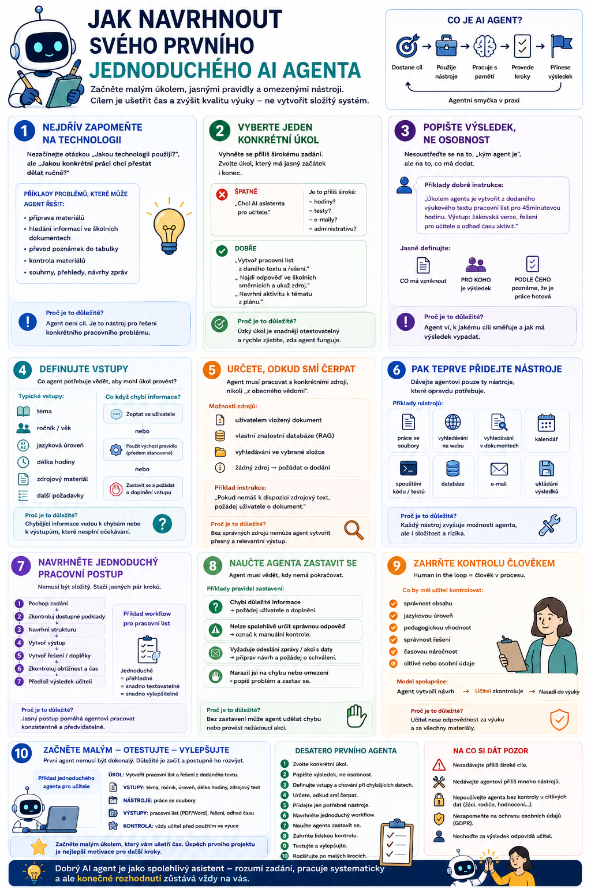

AI agent nemusí být složitý systém napojený na deset databází, několik modelů a půl internetu. Pro první pokus je naopak lepší začít velmi malým úkolem. Dobrý první agent má jasný cíl, několik pravidel, omezený počet nástrojů a přesně určené místo, kde musí výsledek zkontrolovat člověk.

Nejdřív zapomeňte na technologii
Když člověk začne číst o AI agentech, velmi rychle narazí na pojmy jako MCP, RAG, function calling, memory, orchestration nebo multi-agentní systémy.
To všechno může být užitečné.
Ale při návrhu prvního agenta bych nezačínala otázkou:
„Jakou technologii použiji?“
Začala bych otázkou:
„Jakou konkrétní práci chci přestat dělat ručně?“
To je mnohem důležitější.
Agent totiž není cíl.
Je to nástroj pro řešení určitého pracovního problému.
Vyberte jeden konkrétní úkol
Špatné zadání pro prvního agenta je například:
„Chci AI asistenta pro učitele.“
To je příliš široké.
Co má dělat?
Připravovat hodiny? Opravovat testy? Hlídát termíny? Hledat ve školním řádu? Psát e-maily?
Mnohem lepší je:
- „Chci agenta, který mi z připraveného textu vytvoří pracovní list a řešení.“
- „Chci agenta, který vyhledá odpověď ve školních směrnicích a ukáže mi zdroj.“
- „Chci agenta, který před hodinou zkontroluje tematický plán a navrhne aktivitu k aktuálnímu tématu.“
Čím užší první úkol zvolíme, tím snadněji poznáme, zda agent skutečně funguje.
Popište výsledek, ne osobnost
U klasického promptování jsme si zvykli na formulace typu:
To někdy může pomoci nastavit styl odpovědi.
Při návrhu agenta je ale mnohem důležitější definovat výsledek práce.
Například:
To už je skutečná pracovní instrukce.
Agent přesněji ví:
Definujte vstupy
Další otázka zní:
Co agent potřebuje vědět, aby mohl úkol provést?
Pro agenta, který vytváří pracovní list, to může být například:
Pokud některá informace chybí, musíme rozhodnout, co má agent udělat.
Může se zeptat:
„Pro jaký ročník je materiál určen?“
Nebo může použít výchozí pravidlo:
Dobrý agent by neměl důležité informace jednoduše hádat.
Určete, odkud smí čerpat
Tohle je velmi důležité.
Představme si agenta:
„Připrav pracovní list podle mé učebnice.“
Pokud učebnici vůbec nemá k dispozici, model pravděpodobně vytvoří nějaký obecný materiál.
Výsledek může vypadat dobře, ale nebude odpovídat vašemu skutečnému zdroji.
Proto musíme jasně určit:
Z čeho má agent vycházet?
Může mít například:
- uživatelem vložený dokument,
- přístup ke znalostní databázi,
- vyhledávání ve vybrané složce,
- nebo jednoduše pravidlo: Pokud nemáš k dispozici zdrojový materiál, požádej uživatele o jeho dodání.
To poslední je někdy nejlepší bezpečnostní pojistka.
Pak teprve přidejte nástroje
Teď se můžeme vrátit k technologii.
Agent potřebuje nástroj pouze tehdy, pokud ho potřebuje ke splnění svého úkolu.
- Pokud má pouze přepracovat vložený text, možná žádný externí nástroj nepotřebuje.
- Pokud má zjistit aktuální informace, potřebuje web.
- Pokud má vyhledávat ve vlastních dokumentech, potřebuje přístup k těmto dokumentům.
- Pokud má ukládat výsledky, potřebuje nástroj pro práci se soubory.
- Pokud má kontrolovat kalendář, potřebuje kalendář.
Platí jednoduché pravidlo:
Každý další nástroj zvyšuje možnosti systému, ale zároveň jeho složitost a riziko.
Navrhněte jednoduchý pracovní postup
První agent nepotřebuje komplikovanou architekturu.
Stačí mu několik jasných kroků.
Představme si agenta pro přípravu pracovního listu.
↓
zkontroluj dostupné podklady
↓
navrhni strukturu
↓
vytvoř pracovní list
↓
vytvoř řešení
↓
zkontroluj obtížnost a čas
↓
předlož výsledek učiteli
To už je jednoduchý agentní workflow.
Nemusíme kvůli tomu vytvářet šest samostatných agentů.
Naučte agenta zastavit se
Tohle je překvapivě důležité.
Agent by měl vědět nejen:
ale také:
Například:
- Pokud chybí zdrojový text, nevymýšlej jeho obsah. Požádej uživatele o dokument.
- Pokud nelze spolehlivě určit správnou odpověď, označ položku ke kontrole.
- Pokud úkol vyžaduje odeslání zprávy, nejprve připrav návrh a požádej uživatele o schválení.
Agent, který umí říct „tady potřebuji člověka“, je často mnohem užitečnější než agent, který se snaží za každou cenu dokončit všechno.
Definujte kritéria kvality
Agent musí vědět, podle čeho svůj vlastní výstup zkontrolovat.
Například u pracovního listu můžeme stanovit:
- Instrukce musí být jednoznačné.
- Každá úloha musí mít správné řešení.
- Obtížnost musí odpovídat zadané úrovni.
- Materiál musí být možné dokončit během přibližně 25 minut.
Agent pak může před předáním výsledku provést kontrolní krok.
To je malá věc, ale zásadně mění kvalitu práce.
Místo:
dostáváme:
A to už je skutečný agentní princip.
První agent by měl mít omezená oprávnění
Představme si dvě možnosti.
První agent umí:
Druhý umí:
Který je vhodnější jako první experiment?
Jednoznačně první.
Začněte read-only, tedy schopnostmi založenými převážně na čtení a tvorbě návrhů.
Zápisové operace přidávejte až ve chvíli, kdy přesně víte, proč je agent potřebuje.
Jeden jednoduchý příklad
Navrhněme společně agenta:
Jeho úkol:
Z dodaného materiálu vytvořit pracovní list a učitelské řešení.
Vstup
Uživatel dodá:
Instrukce
Agent má používat pouze dodaný obsah.
Nemá doplňovat konkrétní fakta, která ve zdroji nejsou, pokud je neoznačí jako vlastní doplnění.
Workflow
- Agent nejprve analyzuje text.
- Určí hlavní pojmy.
- Navrhne kombinaci úloh.
- Vytvoří žákovskou verzi.
- Vytvoří řešení.
- Provede kontrolu.
Výstup
Výsledkem je:
Human in the loop
Učitel výsledek před tiskem schválí.
A máme prvního agenta.
Žádných deset databází.
Žádný multi-agentní roj.
Žádný technický cirkus.
Přesto už systém vykonává jasně definovaný pracovní proces.
Kdy přidat paměť
Až agent spolehlivě funguje, můžeme začít přidávat další schopnosti.
Například zjistíme, že mu stále opakujeme:
- Materiály chci na A4.
- Instrukce musí být stručné.
- Vždy vytvoř také řešení.
Pak má smysl uvažovat o paměti.
Agent si může tyto preference uchovat a při příští práci je znovu použít.
Ale paměť bych nepřidávala jen proto, že zní chytře.
Má řešit konkrétní problém:
Kdy přidat RAG
Další krok může nastat ve chvíli, kdy agent potřebuje pracovat s větší sadou dokumentů.
Například:
„Připrav pracovní list podle mých materiálů k Evropské unii.“
Máme ale stovky dokumentů.
Nemůžeme všechny poslat modelu.
Tehdy může dávat smysl RAG.
Agent vyhledá pouze relevantní části a použije je jako podklady.
Znovu platí:
Kdy přidat MCP
Podobné je to s MCP.
První agent ho vůbec nemusí potřebovat.
MCP začne být zajímavé například tehdy, když chceme stejného agenta propojit s více systémy:
Pak dává standardizované propojení větší smysl.
Nezačínejte tedy:
Potřebuji MCP server.
Začněte:
Potřebuji, aby agent získal informace z tohoto systému.
Technický způsob přijde potom.
A kdy přidat dalšího agenta?
Až když existuje dobrý důvod.
Například zjistíme, že tvorba materiálu funguje dobře, ale chceme nezávislou kontrolu.
Pak můžeme přidat:
↓
Revizor
Tvůrce vytvoří pracovní list.
Revizor dostane jinou instrukci:
Neopravuj automaticky. Nejprve najdi chyby, nejasnosti a problémy s obtížností.
Teprve potom se výstup vrátí k opravě.
To je mnohem rozumnější než začít rovnou s pěti agenty.
Testujte agenta na špatných případech
Při testování často děláme jednu chybu.
Zadáme agentovi krásně formulovaný úkol a radujeme se, že funguje.
Jenže skutečný uživatel může napsat:
„Udělej mi něco na Evropu.“
Co agent udělá?
- Zeptá se?
- Začne hádat?
- Představí si Evropskou unii?
- Geografii?
- Historii?
Dobrého agenta je potřeba testovat také na:
Právě tam se ukáže kvalita návrhu.
Neposuzujte jen krásu výsledku
Velký jazykový model umí vytvořit velmi působivý výstup.
To může být zrádné.
Při testování agenta je potřeba sledovat také:
- Použil správný zdroj?
- Nevymyslel si informace?
- Dodržel omezení?
- Použil správný nástroj?
- Poznal, kdy neměl pokračovat?
- Dokázal přiznat nejistotu?
To jsou často důležitější ukazatele než vzhled konečného textu.
Dobrý agent má být předvídatelný
U kreativního chatbota může být překvapení příjemné.
U pracovního agenta už méně.
Pokud agent dnes zpracuje pracovní list jedním způsobem a zítra úplně jinak, vzniká problém.
Pracovní agent by měl mít:
Kreativitu můžeme povolit tam, kde ji chceme.
Proces by ale měl zůstat kontrolovatelný.
První verze nemusí být autonomní
Možná nejjednodušší první agent funguje takto:
↓
člověk jej schválí
↓
agent provede práci
↓
člověk zkontroluje výsledek
To je pořád agentní systém.
Nemusíme se snažit odstranit člověka z každého kroku.
Cílem není maximální autonomie.
Cílem je užitečná automatizace s rozumnou kontrolou.
Jednoduchý návrhový vzorec
Pro svého prvního agenta si můžete připravit jedinou krátkou kartu:
Vstupy: Co musí dostat, aby ji zvládl?
Zdroje: Z čeho smí čerpat?
Nástroje: Jaké schopnosti opravdu potřebuje?
Postup: V jakých základních krocích má pracovat?
Kontrola: Jak pozná, že výsledek splňuje požadavky?
Stop pravidla: Kdy se má zastavit a požádat člověka?
Oprávnění: Co smí pouze číst a co případně měnit?
Výstup: Co přesně má na konci odevzdat?
Pokud tuto kartu dokážete vyplnit, máte velmi slušný návrh prvního agenta.
Co bych jako prvního agenta nestavěla
Určitě bych nezačínala systémem:
„Spravuj mi kompletně školní administrativu.“
Stejně tak bych jako první projekt nevolila agenta, který:
Technicky mohou být takové systémy možné.
Jako první projekt jsou ale zbytečně rizikové.
Lepší první projekty
Mnohem vhodnější jsou úkoly, kde případnou chybu jednoduše zachytí člověk před použitím.
Například agent pro:
Takový agent může ušetřit čas a současně způsobit jen malou škodu, pokud se někde splete.
Zapamatujte si
První AI agent nemusí být technicky složitý.
Ve skutečnosti bych doporučila přesný opak:
Začněte problémem.
Nejdřív vytvořte agenta, který jednu konkrétní věc dělá spolehlivě.
Teprve potom přidávejte:
Dobrý agentní systém totiž nevzniká tak, že do něj nasypeme všechny moderní AI technologie.
Vzniká tak, že postupně automatizujeme dobře pochopený pracovní proces.
Co můžeme zkusit jako první
Pokud si chcete návrh agenta vyzkoušet bez programování, vezměte jednu činnost, kterou děláte opakovaně, a popište ji pomocí předchozí karty.
Třeba:
„Pokaždé, když připravuji pracovní list, dělám těchto šest kroků…“
To je pravděpodobně mnohem lepší začátek stavby AI agenta než otázka:
„Jak naprogramuji agenta?“
Protože pokud neumíme popsat proces, který má agent vykonávat, nepomůže nám ani nejlepší model, MCP server nebo sebedražší agentní platforma.